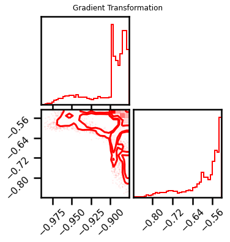
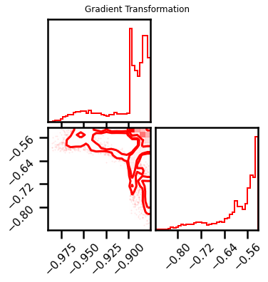
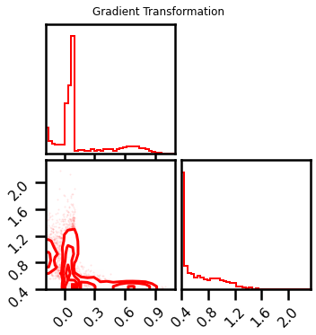
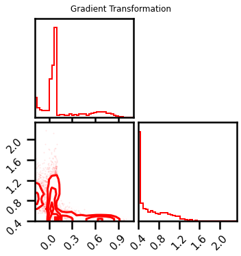
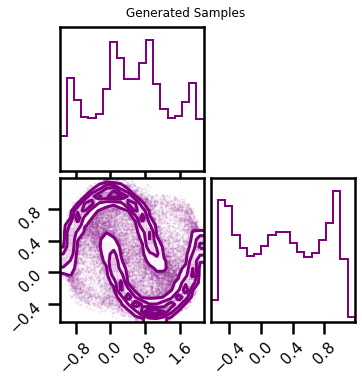
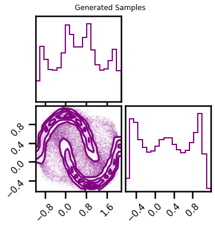
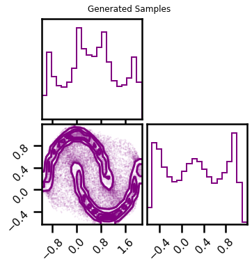
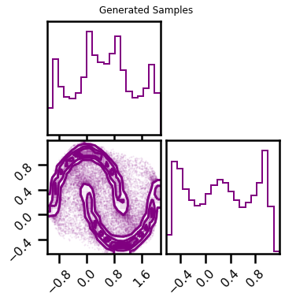

Building Blocks 4 RBIG¶
# @title Install Packages
# %%capture
try:
import sys, os
from pyprojroot import here
# spyder up to find the root
root = here(project_files=[".here"])
# append to path
sys.path.append(str(root))
except ModuleNotFoundError:
import os
os.system("pip install chex")
os.system("pip install git+https://github.com/IPL-UV/rbig_jax.git#egg=rbig_jax")
# jax packages
import jax
import jax.numpy as jnp
from jax.config import config
# import chex
config.update("jax_enable_x64", True)
import chex
import numpy as np
from functools import partial
KEY = jax.random.PRNGKey(123)
# logging
import tqdm
import wandb
# plot methods
import matplotlib.pyplot as plt
import seaborn as sns
import corner
from IPython.display import HTML
sns.reset_defaults()
sns.set_context(context="poster", font_scale=0.7)
%load_ext lab_black
%matplotlib inline
%load_ext autoreload
%autoreload 2
WARNING:absl:No GPU/TPU found, falling back to CPU. (Set TF_CPP_MIN_LOG_LEVEL=0 and rerun for more info.)
Demo Data¶
from sklearn import datasets
from sklearn.preprocessing import StandardScaler
# %%wandb
# get data
seed = 123
n_samples = 5_000
n_features = 2
noise = 0.05
X, y = datasets.make_moons(n_samples=n_samples, noise=noise, random_state=seed)
data = X[:]
# plot data
fig = corner.corner(data, color="blue", hist_bin_factor=2)
X = jnp.array(data, dtype=np.float64)
Model¶
Layer I - Univariate Histogram¶
from rbig_jax.transforms.histogram import InitUniHistTransform
# histogram params
support_extension = 20
alpha = 1e-5
precision = 1_000
nbins = None # init_bin_estimator("sqrt") #bins #cott"#int(np.sqrt(X.shape[0]))
jitted = True
# initialize
shape = X.shape
n_samples = shape[0]
init_hist_f = InitUniHistTransform(
n_samples=n_samples, support_extension=support_extension
)
Init Function¶
# initialize bijector
X_u, hist_bijector = init_hist_f.transform_and_bijector(X)
# forward transformation
X_l1 = hist_bijector.forward(X)
# inverse transformation
X_approx = hist_bijector.inverse(X_l1)
# gradient transformation
X_l1_ldj = hist_bijector.forward_log_det_jacobian(X_l1)
# plot Transformations
fig = corner.corner(X_l1, color="red", hist_bin_factor=2)
fig.suptitle("Forward Transformation")
fig = corner.corner(X_approx, color="red", hist_bin_factor=2)
fig.suptitle("Inverse Transformation")
fig = corner.corner(X_l1_ldj, color="red", hist_bin_factor=2)
fig.suptitle("Gradient Transformation")
Text(0.5, 0.98, 'Gradient Transformation')
from rbig_jax.transforms.histogram import InitUniHistTransform, init_bin_estimator
from rbig_jax.transforms.kde import InitUniKDETransform, estimate_bw
# histogram params
support_extension = 20
alpha = 1e-5
precision = 1_000
nbins = None # init_bin_estimator("sqrt") #bins #cott"#int(np.sqrt(X.shape[0]))
jitted = True
# KDE specific Transform
bw = "scott" # estimate_bw(X.shape[0], 1, "scott")
method = "kde"
# initialize histogram transformation
if method == "histogram":
init_hist_f = InitUniHistTransform(
n_samples=X.shape[0],
nbins=nbins,
support_extension=support_extension,
precision=precision,
alpha=alpha,
jitted=jitted,
)
elif method == "kde":
init_hist_f = InitUniKDETransform(
shape=X.shape, support_extension=support_extension, precision=precision, bw=bw
)
else:
raise ValueError(f"Unrecognized transform: {method}")
Transformations¶
# initialize bijector
X_u, hist_bijector = init_hist_f.transform_and_bijector(X)
# forward transformation
X_l1 = hist_bijector.forward(X)
# inverse transformation
X_approx = hist_bijector.inverse(X_l1)
# gradient transformation
X_l1_ldj = hist_bijector.forward_log_det_jacobian(X_l1)
# plot Transformations
fig = corner.corner(X_l1, color="red", hist_bin_factor=2)
fig.suptitle("Forward Transformation")
fig = corner.corner(X_approx, color="red", hist_bin_factor=2)
fig.suptitle("Inverse Transformation")
fig = corner.corner(X_l1_ldj, color="red", hist_bin_factor=2)
fig.suptitle("Gradient Transformation")
Text(0.5, 0.98, 'Gradient Transformation')
 

Layer II - Inverse Gaussian CDF¶
from rbig_jax.transforms.inversecdf import InitInverseGaussCDF
# univariate normalization Gaussianization parameters
eps = 1e-5
jitted = True
# initialize histogram transformation
init_icdf_f = InitInverseGaussCDF(eps=eps, jitted=jitted)
Transformations¶
# forward with bijector
X_l2, icdf_bijector = init_icdf_f.transform_and_bijector(X_l1)
# alternatively - forward with no bijector
X_l2_ = icdf_bijector.forward(X_l1)
chex.assert_tree_all_close(X_l2_, X_l2)
# inverse transformation
X_l1_approx = icdf_bijector.inverse(X_l2)
chex.assert_tree_all_close(X_l1_approx, X_l1, rtol=1e-5)
# gradient transformation
X_l2_ldj = icdf_bijector.forward_log_det_jacobian(X_l1)
# plot Transformations
fig = corner.corner(X_l2, color="red", hist_bin_factor=2)
fig.suptitle("Forward Transformation")
fig = corner.corner(X_l1_approx, color="red", hist_bin_factor=2)
fig.suptitle("Inverse Transformation")
fig = corner.corner(X_l2_ldj, color="red", hist_bin_factor=2)
fig.suptitle("Gradient Transformation")
Text(0.5, 0.98, 'Gradient Transformation')

PCA Transformation¶
from rbig_jax.transforms.rotation import InitPCARotation
# initialize histogram transformation
init_pca_f = InitPCARotation(jitted=True)
# forward with bijector
X_l3, pca_bijector = init_pca_f.transform_and_bijector(X_l2)
# alternatively - forward with no bijector
X_l3_ = pca_bijector.forward(X_l2)
chex.assert_tree_all_close(X_l3_, X_l3)
# inverse transformation
X_l2_approx = pca_bijector.inverse(X_l3)
chex.assert_tree_all_close(X_l2_approx, X_l2, rtol=1e-3)
# gradient transformation
X_l3_ldj = pca_bijector.forward_log_det_jacobian(X_l2)
chex.assert_tree_all_close(X_l3_ldj, jnp.zeros_like(X_l3_ldj))
# plot Transformations
fig = corner.corner(X_l3, color="red", hist_bin_factor=2)
fig.suptitle("Forward Transformation")
fig = corner.corner(X_l2_approx, color="red", hist_bin_factor=2)
fig.suptitle("Inverse Transformation")
Text(0.5, 0.98, 'Inverse Transformation')
RBIG Blocks¶
Marginal Gaussianization
Random Rotation
from rbig_jax.transforms.block import RBIGBlockInit
# create a list of transformations
init_functions = [init_hist_f, init_icdf_f, init_pca_f]
# create an RBIG "block" init
rbig_block_init = RBIGBlockInit(init_functions=init_functions)
# forward and params
X_g, bijectors = rbig_block_init.forward_and_bijector(X)
# alternatively just the forward
X_g = rbig_block_init.forward(X)
fig = corner.corner(X_g, color="red", hist_bin_factor=2)
fig.suptitle("Forward Transformation")
Text(0.5, 0.98, 'Forward Transformation')

Forward and Inverse Transformations¶
So here we want to be able to chain the transformations together. We have initialized our bijectors but it would be nice to have a convenient way to loop through them calculating all of the quanties, e.g. forward, inverse, log_det_jacobian and some combination of them.
In this package, we have the BijectorChain class which gives us that flexibility.
from rbig_jax.transforms.base import BijectorChain
# create a list of BIJECTORS (not init functions)
bijectors = [hist_bijector, icdf_bijector, pca_bijector]
# create rbig_block
rbig_block = BijectorChain(bijectors=bijectors)
# forward with bijector
X_l3 = rbig_block.forward(X)
# inverse transformation
X_approx = rbig_block.inverse(X_l3)
chex.assert_tree_all_close(X_approx, X, rtol=1e-4)
# gradient transformation
X_l3_ldj = rbig_block.forward_log_det_jacobian(X)
# forward and gradient transformation
X_l3_, X_l3_ldj_ = rbig_block.forward_and_log_det(X)
chex.assert_tree_all_close(X_l3_, X_l3)
chex.assert_tree_all_close(X_l3_ldj, X_l3_ldj_)
# plot Transformations
fig = corner.corner(X_l3, color="red", hist_bin_factor=2)
fig.suptitle("Forward Transformation")
fig = corner.corner(X_approx, color="red", hist_bin_factor=2)
fig.suptitle("Inverse Transformation")
fig = corner.corner(X_l3_ldj, color="red", hist_bin_factor=2)
fig.suptitle("Gradient Transformation")
Text(0.5, 0.98, 'Gradient Transformation')

 

Multiple Layers¶
So it’s very evident that a single RBIG block isn’t enough. We need multiple layers. So all we need to do is loop through the init_ methods until we are satisfied. Then once we’re done, we can create another chain and check how good is our transformation.
%%time
import itertools
itercount = itertools.count(-1)
n_blocks = 20
# initialize rbig block
init_functions = [
init_hist_f,
init_icdf_f,
init_pca_f
]
# initialize RBIG Init Block
rbig_block_init = RBIGBlockInit(init_functions=init_functions)
# initialize list of bijectors
bijectors = list()
# initialize transform
X_g = X.copy()
plot_steps = False
while next(itercount) < n_blocks:
# fit RBIG block
X_g, ibijector = rbig_block_init.forward_and_bijector(X_g)
if plot_steps:
fig = corner.corner(X_g, color="blue", hist_bin_factor=2)
# append bijectors
bijectors += ibijector
CPU times: user 1min 4s, sys: 1min 4s, total: 2min 9s
Wall time: 11.7 s
Check Transformation¶
Now let’s check the Gaussianized data to see how well we did.
fig = corner.corner(X_g, color="red", hist_bin_factor=2)
This looks pretty good. So let’s see how good the inverse transformation. Again, we create a bijectorchain which will loop through all of the transformations
# create rbig_model
rbig_model = BijectorChain(bijectors=bijectors)
%%time
# forward with bijector
X_g_ = rbig_model.forward(X)
chex.assert_tree_all_close(X_g_, X_g, rtol=1e-4)
# inverse transformation
X_approx = rbig_model.inverse(X_g)
chex.assert_tree_all_close(X_approx, X, rtol=1e-2)
# gradient transformation
X_g_ldj = rbig_model.forward_log_det_jacobian(X)
# forward and gradient transformation
X_g__, X_g_ldj_ = rbig_model.forward_and_log_det(X)
chex.assert_tree_all_close(X_g__, X_g_)
chex.assert_tree_all_close(X_g_ldj, X_g_ldj_)
CPU times: user 12 s, sys: 864 ms, total: 12.9 s
Wall time: 12.8 s
# plot Transformations
fig = corner.corner(X_g, color="red", hist_bin_factor=2)
fig.suptitle("Forward Transformation")
fig = corner.corner(X_approx, color="red", hist_bin_factor=2)
fig.suptitle("Inverse Transformation")
fig = corner.corner(X_g_ldj, color="red", hist_bin_factor=2)
fig.suptitle("Gradient Transformation")
Text(0.5, 0.98, 'Gradient Transformation')
Gaussianization Flow¶
The bijector chains allow us to do some extra things like density estimation or sampling. So we can also use the GaussianizationFlow class which is exactly like the BijectorChain class but with some additional benefits like calculating log probabilities. This may seem very redundant for the iterative method, but it is very helpful for fully parameterized Gaussianization; i.e. the end result is the same but the way to find the parameters are different.
from rbig_jax.models import GaussianizationFlow
from distrax._src.distributions.normal import Normal
# initialize base distribution
base_dist = Normal(jnp.zeros((2,)), jnp.ones((2,)))
# initialize flow model
rbig_model = GaussianizationFlow(base_dist=base_dist, bijectors=bijectors)
Density Estimation¶
Here we will do an example of density estimation. In this example,
So here we will do an example of density estimation. The same pythn code below is equivalent.
# propagate through the chain
X_g_grid, X_ldj_grid = rbig_model.forward_and_log_det(xyinput)
# calculate log prob
base_dist = Normal(jnp.zeros((2,)), jnp.ones((2,)))
latent_prob = base_dist.log_prob(X_g_grid)
# calculate log probability
X_log_prob = latent_prob.sum(axis=1) + X_ldj_grid.sum(axis=1)
However, using the score_samples method is a lot more convenient.
# Original Density
n_samples = 1_000_000
noise = 0.05
seed = 42
X_plot, _ = datasets.make_moons(n_samples=n_samples, noise=noise, random_state=seed)
%%time
n_grid = 200
buffer = 0.01
xline = jnp.linspace(X[:, 0].min() - buffer, X[:, 0].max() + buffer, n_grid)
yline = jnp.linspace(X[:, 1].min() - buffer, X[:, 1].max() + buffer, n_grid)
xgrid, ygrid = jnp.meshgrid(xline, yline)
xyinput = jnp.concatenate([xgrid.reshape(-1, 1), ygrid.reshape(-1, 1)], axis=1)
X_log_prob = rbig_model.score_samples(xyinput)
CPU times: user 6.91 s, sys: 384 ms, total: 7.29 s
Wall time: 5.96 s
# Original Density
from matplotlib import cm
# Estimated Density
cmap = cm.magma # "Reds"
probs = jnp.exp(X_log_prob)
fig, ax = plt.subplots(ncols=2, figsize=(12, 5))
h = ax[0].hist2d(
X_plot[:, 0], X_plot[:, 1], bins=512, cmap=cmap, density=True, vmin=0.0, vmax=1.0
)
ax[0].set_title("True Density")
ax[0].set(
xlim=[X_plot[:, 0].min(), X_plot[:, 0].max()],
ylim=[X_plot[:, 1].min(), X_plot[:, 1].max()],
)
h1 = ax[1].scatter(
xyinput[:, 0], xyinput[:, 1], s=1, c=probs, cmap=cmap, vmin=0.0, vmax=1.0
)
ax[1].set(
xlim=[xyinput[:, 0].min(), xyinput[:, 0].max()],
ylim=[xyinput[:, 1].min(), xyinput[:, 1].max()],
)
# plt.colorbar(h1)
ax[1].set_title("Estimated Density")
plt.tight_layout()
plt.show()
Score (Negative Log-Likelihood)¶
nll = rbig_model.score(X)
print(f"NLL Score: {nll:.4f}")
NLL Score: 0.6803
Sampling¶
This is another useful application.
%%time
# number of samples
n_samples = 100_000
seed = 42
X_samples = rbig_model.sample(seed=seed, n_samples=n_samples)
CPU times: user 5.96 s, sys: 487 ms, total: 6.44 s
Wall time: 3.79 s
fig = corner.corner(X, color="blue", label="Original Data")
fig.suptitle("Original Data")
plt.show()
fig2 = corner.corner(X_samples, color="purple")
fig2.suptitle("Generated Samples")
plt.show()
 

Better Training¶
So we assumed that there would be \(20\) layers necessary in order to train the model. But how do we know that it’s the best model? This would require some stopping criteria instead of just an ad-hoc procedure.
In RBIG, we use the information reduction loss which essentially checks how much information content is being removed with each iteration. We are effectively creating a more and more independent distribution with every marginal Gaussianization + rotation. So naturally, we can simply check how much the information is being reduced between iterations. If there are no changes, we can stop.
Loss Function¶
We can initialize the info loss function here.
from rbig_jax.losses import init_info_loss
# define loss parameters
max_layers = 1_000
zero_tolerance = 60
p = 0.5
jitted = True
# initialize info loss function
loss = init_info_loss(
n_samples=X.shape[0],
max_layers=max_layers,
zero_tolerance=zero_tolerance,
p=p,
jitted=jitted,
)
Training¶
from rbig_jax.training.iterative import train_info_loss_model
# define training params
verbose = True
n_layers_remove = 50
interval = 10
# run iterative training
X_g, rbig_model_info = train_info_loss_model(
X=X,
rbig_block_init=rbig_block_init,
loss=loss,
verbose=verbose,
interval=interval,
n_layers_remove=n_layers_remove,
)
Layer 10 - Cum. Info Reduction: 2.700 - Elapsed Time: 6.2950 secs
Layer 20 - Cum. Info Reduction: 2.850 - Elapsed Time: 11.0626 secs
Layer 30 - Cum. Info Reduction: 3.058 - Elapsed Time: 15.9575 secs
Layer 40 - Cum. Info Reduction: 3.216 - Elapsed Time: 20.8868 secs
Layer 50 - Cum. Info Reduction: 3.263 - Elapsed Time: 25.7276 secs
Layer 60 - Cum. Info Reduction: 3.263 - Elapsed Time: 30.5382 secs
Layer 70 - Cum. Info Reduction: 3.263 - Elapsed Time: 35.3184 secs
Layer 80 - Cum. Info Reduction: 3.277 - Elapsed Time: 40.2019 secs
Layer 90 - Cum. Info Reduction: 3.277 - Elapsed Time: 44.9938 secs
Layer 100 - Cum. Info Reduction: 3.277 - Elapsed Time: 49.7303 secs
Layer 110 - Cum. Info Reduction: 3.277 - Elapsed Time: 54.5568 secs
Layer 120 - Cum. Info Reduction: 3.320 - Elapsed Time: 59.2062 secs
Layer 130 - Cum. Info Reduction: 3.320 - Elapsed Time: 64.0455 secs
Layer 140 - Cum. Info Reduction: 3.367 - Elapsed Time: 68.8304 secs
Layer 150 - Cum. Info Reduction: 3.367 - Elapsed Time: 73.6238 secs
Layer 160 - Cum. Info Reduction: 3.367 - Elapsed Time: 78.3725 secs
Layer 170 - Cum. Info Reduction: 3.367 - Elapsed Time: 83.1724 secs
Layer 180 - Cum. Info Reduction: 3.367 - Elapsed Time: 87.9750 secs
Layer 190 - Cum. Info Reduction: 3.367 - Elapsed Time: 92.6474 secs
Converged at Layer: 192
Final Number of layers: 142 (Blocks: 47)
Total Time: 93.7292 secs
Information Reduction Evolution¶
fig, ax = plt.subplots()
ax.plot(rbig_model_info.info_loss, color="red")
ax.set(xlabel="Iterations", ylabel="$\Delta$ Info. Reduction")
plt.show()
Negative Log-Likelihood¶
nll = rbig_model_info.score(X)
print(f"NLL Score: {nll:.4f}")
NLL Score: 0.5901
Density Estimation (Revisited)¶
%%time
X_log_prob = rbig_model_info.score_samples(xyinput)
CPU times: user 32.5 s, sys: 2.57 s, total: 35.1 s
Wall time: 19.4 s
# Estimated Density
cmap = cm.magma # "Reds"
probs = jnp.exp(X_log_prob)
fig, ax = plt.subplots(ncols=2, figsize=(12, 5))
h = ax[0].hist2d(
X_plot[:, 0], X_plot[:, 1], bins=512, cmap=cmap, density=True, vmin=0.0, vmax=1.0
)
ax[0].set_title("True Density")
ax[0].set(
xlim=[X_plot[:, 0].min(), X_plot[:, 0].max()],
ylim=[X_plot[:, 1].min(), X_plot[:, 1].max()],
)
h1 = ax[1].scatter(
xyinput[:, 0], xyinput[:, 1], s=1, c=probs, cmap=cmap, vmin=0.0, vmax=1.0
)
ax[1].set(
xlim=[xyinput[:, 0].min(), xyinput[:, 0].max()],
ylim=[xyinput[:, 1].min(), xyinput[:, 1].max()],
)
# plt.colorbar(h1)
ax[1].set_title("Estimated Density")
plt.tight_layout()
plt.show()
Sampling Revisited¶
%%time
# number of samples
n_samples = 100_000
seed = 42
X_samples = rbig_model_info.sample(seed=seed, n_samples=n_samples)
CPU times: user 30.6 s, sys: 2.11 s, total: 32.7 s
Wall time: 8.93 s
fig = corner.corner(X, color="blue", label="Original Data")
fig.suptitle("Original Data")
plt.show()
fig2 = corner.corner(X_samples, color="purple")
fig2.suptitle("Generated Samples")
plt.show()
 

Saving and Loading¶
Often times it would be nice to save and load models. This is useful for checkpointing (during training) and also for convenience if you’re doing research on google colab.
Fortunately, everything here are python objects, so we can easily save and load our models via pickle.
Saving¶
Do to the internals of python (and design choices within this library), one can only store objects. So that includes the rbig_block, the bijectors and also the rbig_model. This does not include the rbig_block_init for example because that isn’t an object, it’s a function with some local params.
import joblib
joblib.dump(rbig_model_info, "rbig_model_test.pickle")
['rbig_model_test.pickle']
Simple Test¶
They won’t be the exact same byte-for-byte encoding. But they should give the same results either way :).
# nll for the old model
nll = rbig_model_info.score(X)
print(f"Negative Log-Likelihood: {nll:.4f}")
# nll for the loaded model
nll = rbig_model_loaded.score(X)
print(f"Negative Log-Likelihood: {nll:.4f}")
Negative Log-Likelihood: 0.5880
Negative Log-Likelihood: 0.5880